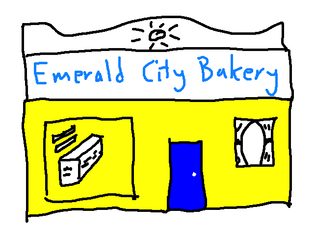
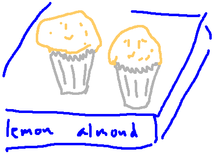
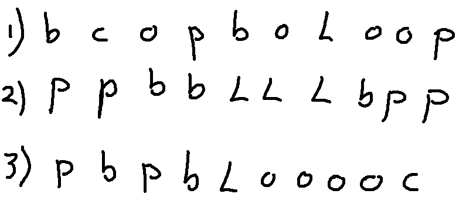
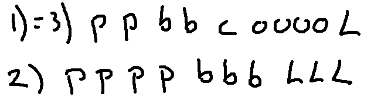
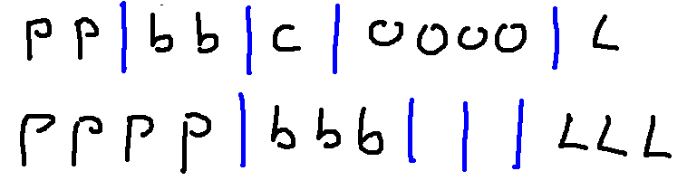
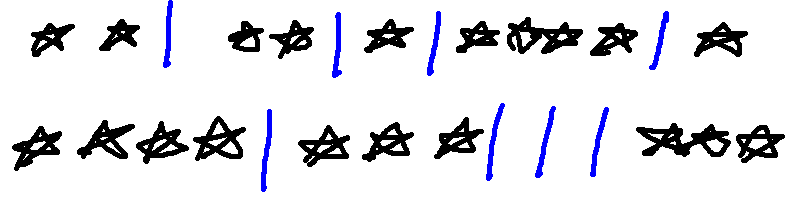
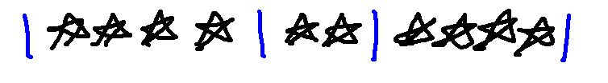
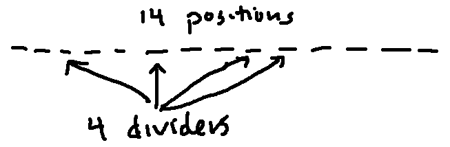

 
Remember that the Emerald City Bakery makes muffins with various combinations of these add-ons:
A = {add-ons} = {chocolate-chip, blueberry, orange, almond, lemon, cherry, walnut}
As we saw in the previous video, there are \(2^7\) different subsets of A. This count includes the empty set and also the entire set A.
Suppose we ask a different question: how many subsets of A containing exactly 3 elements? You may recall from chapter 1 or previous math classes that this is \({7 \choose 3} = \frac{7!}{3!4!}\). In general, if our set contains n objects and we wish to pick a subset of size k, the number of possible subsets is \({n \choose k} = \frac{n!}{k!(n-k)!}\).
Now, let's change the problem a bit. Suppose the bakery made 5 types today: plain (p), blueberry (b), cherry (c), orange (o), lemon-almond (L). How many ways can I choose an assortment of 10 muffins for my group meeting?
Notice that the assortment doesn't have an order. So it's like a set, except that we can have more than one copy of some (or all) types. Here are three ways that I might choose the muffins in order. Notice that two of them are the same assortment.

If you haven't seen this sort of problem before, it's not at all obvious how to count the possibilities. If you consider your options for picking each muffin, in order, it's not obvious how to avoid counting the same assortment more than once. There's a trick. And this specific formula is much easier to remember and apply correctly if you know how to derive it.
The first step is to put our muffin types in a specific order. We'll pick this order: p, b, c, o, L. So our three assortments look like this:

Then we're going to put dividers between the types of muffins. We're going to do this like the compartments in a cash register: each type has its own bin, so the dividers stay even if a bin is empty.

Now notice that the letters are redundant. We have a fixed convention about which bin contains which type of muffin. So we can simplify our representations to use a single symbol for each muffin.

Notice that the dividers can be on the ends. For example, here's how to represent four blueberry, two cherry, and four orange.

Now we have representations that we can easily count. Each one contains 14 symbols: 10 muffins and 4 dividers. The symbols can be arranged in any order. So, to count the possibilities, we have 14 positions, from which we need to choose four to contain the dividers. So we have \({14 \choose 4} = \frac{14}{4! 10!}\) possible assortments.

Notice that we can also count the possibilities by asking how many ways we can choose a set of 10 positions to contain the muffins. So then we have \({14 \choose 10}\) possibilities. But notice that \({14 \choose 10} = \frac{14!}{4! 10!} = {14 \choose 4}\). So both ways to see the problem give us the same answer.
In general, let's suppose that we have n types of muffins and we'd like to choose an assortment of k muffins. Then the formula is \[{{k+(n-1)} \choose {n-1}} = {{k+(n-1)} \choose {k}} \]
As you can see, this formula is a bit difficult to remember. Also, it's extremely easy to get n and k confused. So it is much better to quickly talk yourself through the key points of the construction we just saw: how many objects, how many dividers (which is one less than the number of types).